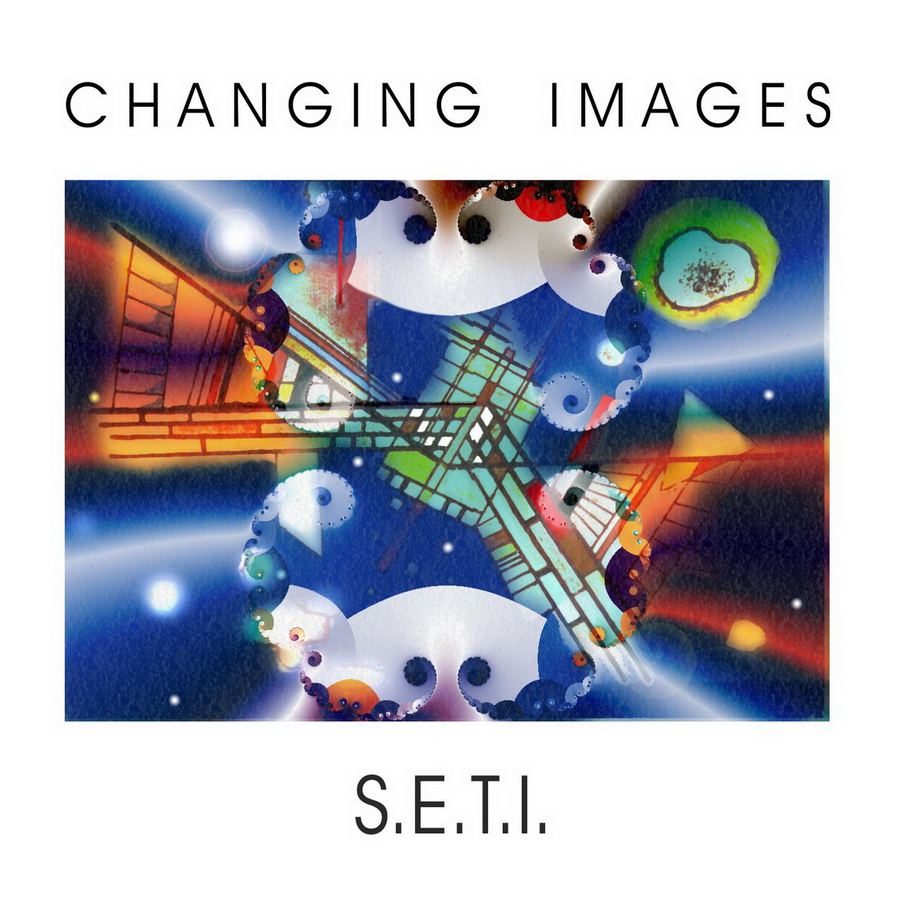
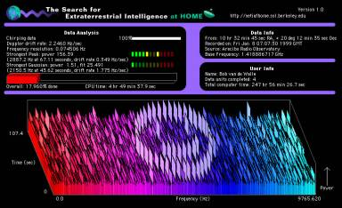

CD Album · 2000 · CI004
S.E.T.I.
A musical search for extraterrestrial intelligence, inspired by science, cinema and the infinite.
The concept
Signals from elsewhere.
This album is dedicated to Project SETI — the Search for Extraterrestrial Intelligence. Following the tradition of science-fiction cinema, the music imagines a journey through gates to different worlds, contemporary rhythms and the mysterious possibility of contact. Join the search — have fun listening.


Listen to “Seti” (excerpt)
The tracks
- Survey 9:36
- Seti 5:36
- Gates 6:40
- Robot 4:19
- Teleport 6:33
- Planet Inca 6:16
- Gates 2 Consciousness 6:11
- Fear 5:14
- Seti Warp 4:26